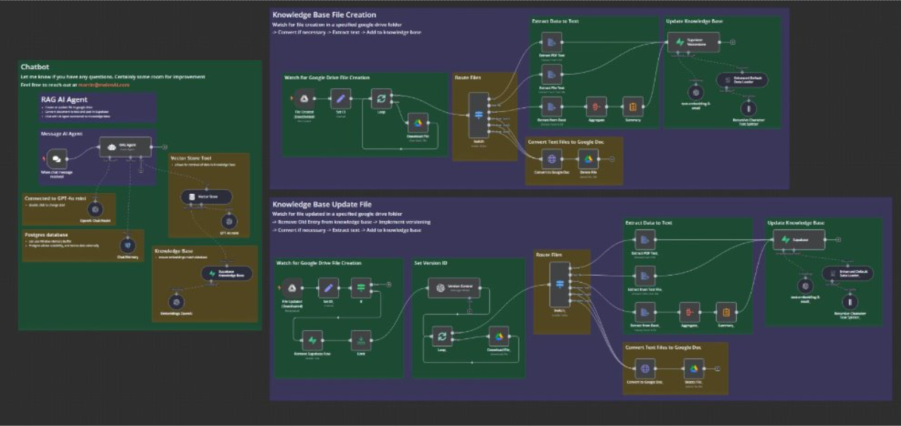
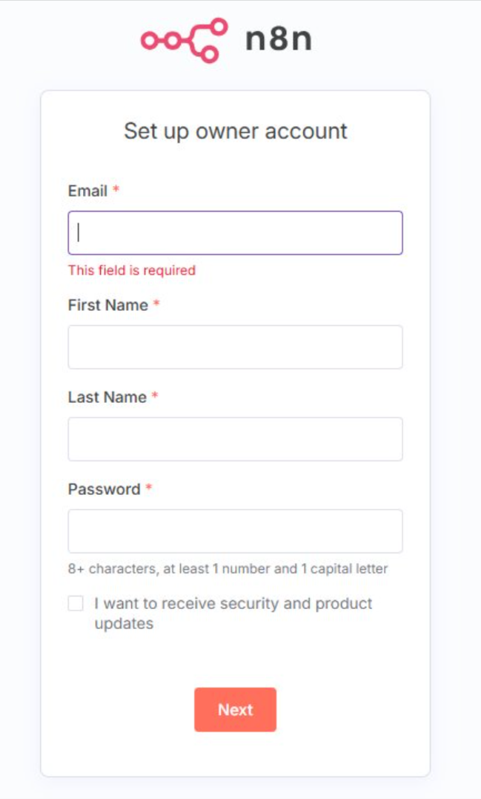
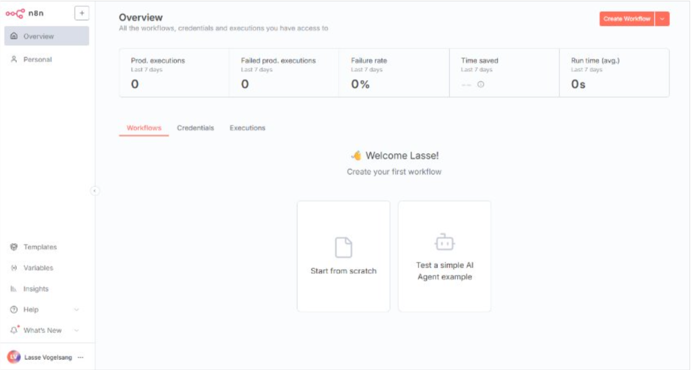

1. AI agenter og automatisering
1. Lecture - Introduction
Introduction to AI Agents
Agenda
- Course introduction
- Who am I?
- The systems we use
- Goals for today and Monday:
- n8n installed – and working
- First agent created in n8n – the ultimate test of the setup
- Introduction to n8n and the first “real” workflow
Start installing…
- Download Docker Desktop
- Run the n8n Docker command (this will automatically download the image)
Who Am I?
- Educated from RUC, UC Irvine, Georgia State, IT-University of Copenhagen, CBS
- Ph.D in systems development
- Master (Kandidat) in software development
- MBA in general management
- Teaching experience from EA, The IT-University and UC Irvine
- Forskning i systemudviklingsmetoder
- P.t. i et forskningsprojekt om brug af AI i systemudvikling
Experience
- +15 years of practical experience in systems development
- Worked at
- Netcompany
- Edlund
- Saxo Bank
- My Roles
- Developer
- Project manager
- Manager/leader/head of department
Techniques, processes and tools
- Developed in .net and C# (Java a long time ago)
- 1.000 DB tables
- 1.000 projects
- 10 mill. Lines of code
- High business complexity
- Azure Devops, Jira, and other tools
- Github, Cloud, AI, ..
- DevOps and Quality assurance (test automation)
Questions?
- Contact me via mail: lavo@ek.dk
- I “don’t” answer messages on fronter!
Course overview
Studieordningen
FORMÅL OG LÆRINGSMÅL
AI Agenter er avanceret AI, som selvstændigt finder strategi og løsning på komplekse opgaver. LLMer (som ChatGPT) er AI som mennesker kan chatte med og få svar, mens en AI Agent selvstændigt udfører opgaver. En AI agent har adgang til systemer og værktøjer, som den bruger til at udføre opgaver automatisk.
På kurset lærer du at opsætte workflows til automatisering af opgaver, som spænder fra at få daglige nyheder om f.eks. AI agenter, til et større SOME marketings setup. Du vil lære om hvordan large language models (som ChatGPT) virker og at bruge dem til AI agenter. Du vil lære prompt engineering til instruere AI agenterne til at udføre deres opgaver. Derudover kigger vi på RAGs, hvor AI får information fra vector databaser til deres opgaver
Vi bruger workflow værktøjet n8n til at sætte vores agenter og workflows op. Der vil være behov en smule JavaScript, hvor det meste dog kan fås fra diverse LLMer uden de store problemer. Der vil være mulighed for at bruge Python e.lign programmeringssprog i det afsluttende projekt, men det er ikke et krav.
Læringsmål
- Viden
- Ved hvad de forskellige LLMer er gode til
- Viden om workflows og AI agenter
- Kendskab til forskellige arkitekturer (sekventiel vs. parallel)
- Færdigheder
- Kan oprette workflows til automatisk udførsel af arbejds- og andre processer
- Bruge prompt engineering til at instruere agenter
- Oprette og instruere en AI Agent til at udføre en del af en arbejdsproces
- Kan teste og optimere workflows med AI agenter
- Oprette og bruge RAGS og vector databaser i workflows
Læringsmål
- Kompetencer
- Vælge LLMer til brug i automatisering
- Kunne vurdere brug af forskellige elementer i et workflow
- Gennemføre projekt med workflow og opsætning af AI agenter
Lecture Plan I
| Week | Date | Emne |
|---|---|---|
| 5 | 26-01-26 | Introduktion og de første workflows |
| 6 | 02-02-26 | n8n intro - backup workflow - credentials - etc |
| 7 | 09-02-26 | AI agents - simple |
| 8 | 16-02-26 | LLM, Ollama intro og mere n8n |
| 9 | 23-02-26 | Prompt engineering - promptning af agenterne |
| 10 | 02-03-26 | AI agents - tools, decision making, multi-agents |
| 11 | 09-03-26 | RAG - Simple RAG |
| 12 | 16-03-26 | RAG - Graph RAG |
| 13 | 23-03-26 | Projekt - opstart |
Lecture Plan II
| Week | Date | Emne |
|---|---|---|
| 14 | 30-03-26 | PÅSKE |
| 15 | 06-04-26 | PÅSKE |
| 16 | 13-04-26 | MCP - feedback projekter |
| 17 | 20-04-26 | MCP og vibe coding |
| 18 | 27-04-26 | Kvalitetssikring |
| 19 | 04-05-26 | Opsamling, nyt emne og opstart af projekt |
| 20 | 11-05-26 | Projekt |
| 21 | 18-05-26 | Projekt - eksamenssnak |
Teaching Approach
- Introduction of the topics and dialogue
- Topic discussions
- 1-on-1 sessions
- Exercises
- Easy, medium, hard – allows for progression
- Find your own “Pet project”
Projects
- 2-week project
- Use of specific technology
- Exam project
- Building workflows and agents for a specific case
- Must be demonstrated as working workflows at the exam
- Individual projects
- Important to be engaged from the start due to course progression
The Exam
- Independent assessment of the course/module
- Oral exam
- 10-minute presentation of final project followed by a 20-minute examination (including grading)
- The exam is individual
- Implementation of a workflow and a presentation of the considerations regarding its implementation
- The workflow must run on your own computer
- Using external services is permitted
Readings
- The course is not “literature heavy”
- I expect you to be proactive in seeking information, especially in connection with exercises and projects
Use of AI for this class
- How much AI am I allowed to use?
- As much as you want! Use of AI is anticipated. The course will be hard if you don’t use AI to do assignments and projects.
- It is part of the course (and the exam) to account for how you used AI to solve your tasks. The exam will focus on how you prompted the AIs and your overall process.
Which models to use?
- You can use whatever you like.
- I have been using Claude. Gemini has a fair amount of free tokens.
- It is part of the course to have challenges in the use of LLMs.
- Own computer (Ollama)
Guest speakers
TBA
Course pages
- You can find the course material here: https://vogelsang.github.io/AI-Agenter-F2026-public
- Exercises and projects has to be turned in on ItsLearning - https://ek.itslearning.com/ContentArea/ContentArea.aspx?LocationID=7569&LocationType=1
Slides
- Normally comes on the day of the lecure. Might come out earlier. I might change slides up until right before class (don’t print them)
- Mix of English and Danish
Ground rules
- Show up on time
- Be reasonable
Where to find course material?
Course material on Github site: - https://vogelsang.github.io/AI-Agenter-F2026-public/
Announcements and assignment turn ins on ItsLearning - https://ek.itslearning.com/ContentArea/ContentArea.aspx?LocationID=7569&LocationType=1
AI agents
Large Language Models & ChatBots
- We are familiar with ChatGPT, Gemini, Claude, Grok, etc.
- Standard interaction: A human asking a chatbot.
- Using natural spoken language (no coding required)
- LLMs are neural networks, but more about that later

Large Language model
An LLM is a type of Artificial Intelligence trained on vast amounts of text data to understand, generate, and manipulate human language.
To break it down:
- Large: Refers to the scale of the training data (petabytes of text) and the complexity of the model (billions of “parameters”).
- Language: It is built to process communication—not just English or Danish, but also computer code and mathematical logic. Model: It is a complex mathematical representation of patterns found in human thought and speech.
LLM
An LLM is a highly advanced statistical autocomplete. It doesn’t ‘know’ facts like a person does; instead, it predicts the next most likely word (token) in a sequence based on everything it has ever read.
Artificial intelligence
The application of computer systems able to perform tasks or produce output normally requiring human intelligence, especially by applying machine learning techniques to large collections of data.
A program or other piece of software that performs tasks or produces output normally requiring human intelligence. (Oxfrord dixionary)
AI Agents
What is an AI Agent?
The “Wrapper” Concept
- We place a software layer around the LLM.
- LLM = The Brain.
- Software = The Body.

What is an AI Agent?
Key Capabilities:
- Reasoning: Planning steps to a goal.
- Memory: Remembering past context.
- Tools: Interacting with APIs/Databases.
Example: The Meeting Booking Agent
The Goal: “Schedule a 30-minute sync with Peter next Tuesday afternoon.”
Chatbot (Passive)
- User: “Book a meeting with Peter.”
- Bot: “Tells you to look up in the calendars and send invite to Peter.”
- Result: User has to do the work.
AI Agent (Active)
- User: “Book a meeting with Peter.”
- Agent: Searches contacts for Peter, checks your calendar, emails Peter options, and creates the invite.
- Result: Task Completed.
How the Agent Thinks
When you give the command, the Agent enters a Thought-Action-Observation loop:
- Thought: I need to find Peter’s email address.
- Action: Search CRM/Contacts tool for “Peter.”
- Observation: Found
peter@company.com.
- Thought: I need to find free slots on Tuesday afternoon.
- Action: Check Google Calendar for Tuesday between 13:00 and 17:00.
- Observation: User is free at 14:00 and 15:30.
- Thought: I will propose these times to Peter via email.
- Action: Send email to Peter via Gmail tool.
- Observation: Email sent successfully.
- Final Response: “I’ve reached out to Peter with two options for Tuesday afternoon.”
The Agent’s “Hands” (Tools)
To book that meeting, the Agent was connected to these n8n nodes:
- Google Contacts: To find the right person.
- Google Calendar: To read availability and write the event.
- Gmail / Outlook: To communicate with the external party.
- LLM (The Brain): To decide which tool to use and what to write.
LLM vs. AI Agent
| Feature | LLM (The Brain) | AI Agent (The Worker) |
|---|---|---|
| Core Capability | Text generation & knowledge | Goal-oriented task completion |
| Decision-Making | None (predicts next word) | Yes (chooses what to do next) |
| Tool Use | No (Static) | Yes (Uses APIs, Web, n8n) |
| Workflow | Single-step (Prompt -> Result) | Multi-step (Loop until finished) |
| Scope | Generates language | Performs real-world actions |
| Example | Writing a poem | Researching a lead and sending an email |
Workflows
The “Recipe” Analogy
- The Business Process: “Making Dinner for 10 People” (The high-level goal).
- The Workflow: “The Recipe for Lasagna” (The specific, repeatable steps).
A Workflow must be: {.fragment} - Explicit: No guessing. Every step is defined. - Repeatable: If you follow the recipe exactly, you get the same meal every time. - Automatable: Once the recipe is clear, a “robot chef” (n8n) can do the cooking for you.
Agents need workflows
- An LLM (Agent) might know how to write an email, but it doesn’t know when to send it, where to get the email address, or how to log the activity in a database.
- The Workflow is the skeleton that gives the Agent a purpose and access to the real world.
- We don’t just build AI Agents to have a conversation. We build Workflows to give those Agents a job to do.
Deterministic vs. Agentic Workflows
Deterministic
The Traditional Way - Rules-based: “If This, Then That.” - Fixed Paths: Every step is pre-defined. - Predictable: Given the same input, you always get the same output. - Analogy: A train on tracks.
Agentic
The AI-Powered Way - Goal-based: “Find the answer to X.” - Dynamic Paths: The AI decides which tools to use in real-time. - Flexible: Can handle unexpected data or “fuzzy” logic. - Analogy: A taxi driver.
The n8n “Superpower”
We build deterministic workflows that use AI Agents as “intelligent stops” along the way.
Exercise
- Discuss and identify three everyday tasks that could be automated or improved with AI agent and workflows.
- Try to find something in your own life that could be automated (find your “pet project”?)
Systems we use
n8n
n8n: Nodes to Nodes
What is n8n?
- Nodes to Nodes: The name represents how data flows between blocks.
- Workflow Automation: A tool designed to build complex logic between apps.
- Visual Programming: You “code” by connecting nodes rather than writing lines of text.

A workflow is a sequence of nodes that process data from start to finish. {.fragment}
More n8n
n8n
n8n is an open-source, node-based workflow automation tool that enables users to connect various apps and services to automate tasks without extensive coding (No-code/low-code).
- Automates complex workflows by connecting APIs, databases, and cloud services.
- Offers a visual, drag-and-drop interface to build workflows.
- Supports custom code with JavaScript (and Python) for advanced logic.
- Self-hostable, providing data privacy and control.
- Integrates with hundreds of applications out-of-the-box.
- Useful for automating repetitive tasks, data synchronization, and alerts.
- Note: Everything we build in n8n can also be done in Python, for example.
Introduction course
- Introduction course.
- Takes app. 2 hours.
- Gives you the fundamentals.
- Try it out while reading the course.
Local vs. Cloud n8n
- n8n is available in both a local and a cloud version.
- In this course, we will use the local version.
- Free: No subscription or costs.
- Privacy: No GDPR issues (your data stays on your machine).
Ollama
Ollama
Local LLM Runner
- Run AI Locally: Allows you to run powerful models (like Llama 3 or Mistral) on your own computer.
- Privacy & Speed: No data leaves your machine, and there is no latency from the cloud.
- Easy Integration: Connects perfectly with n8n to act as the “Brain” for your local agents.
- Free: No API costs or monthly subscriptions.
- CLI integration: Integrates with Claude Code, COdex, etc. via Ollama Launch.
Install n8n systems
How to Install n8n Locally
You have two main paths to run n8n on your own computer. Both are free and private.
Option A: Docker (Recommended)
- Pros: Isolated environment, easy to backup, professional standard.
- Cons: Requires installing Docker Desktop first.
Option B: npx / npm
- Pros: Instant start if you already have Node.js.
- Cons: Brittle; if you close the terminal, n8n stops. Harder to manage long-term.
Installation: npx (Node.js)
If you don’t want to use Docker, you can run n8n directly using Node.js.
Requirement: Ensure you have Node.js installed.
Run this command:
Keep it open: Do not close this terminal window while working, or n8n will stop.
Access: Open
http://localhost:5678.
Note: Your data is saved in your user home folder under /.n8n. {.fragment}
Which should I choose?
| Feature | Docker (Recommended) | npx / npm |
|---|---|---|
| Ease of Setup | Medium (Install Docker) | Easy (if Node.js exists) |
| Data Safety | High (Stored in Volume) | Medium (Stored in Home dir) |
| Stability | High (Runs in background) | Low (Stops when terminal closes) |
| Updates | Very Easy | Manual |
Tip
Teacher’s Advice: Use Docker. It prepares you for how AI Agents are actually deployed in the real world.
Step-by-Step: Docker Setup I
- Install Docker Desktop
- Download for Mac/Windows: docker.com/products/docker-desktop
- Important: Start the Docker Desktop application after installation and keep it running.
- Ensure Docker Desktop is Running
- Verify the Docker icon in your system tray/menubar indicates it’s active.
Step-by-Step: Docker Setup II
- Open your Terminal
- Mac: Terminal or iTerm2.
- Windows: PowerShell or Command Prompt.
- Run the command (See next slides for your specific OS).
- Access n8n:
- Open your browser to:
http://localhost:5678
- Open your browser to:
Running n8n (Mac & Linux)
Copy and paste this command into your terminal to run n8n in the background:
Note
The -v ~/.n8n:/home/node/.n8n part ensures your workflows are saved in your user’s home folder.
Running n8n (Windows PowerShell)
Why these specific flags?
-d(Detached): Runs the container in the background. You can close your terminal and n8n will keep running.--name n8n: Gives the container a friendly name so you don’t have to remember a random ID.-p 5678:5678: Maps the internal n8n port to your computer’s port.-v (Volume): The most important part. This links a folder on your computer to n8n. Without this, your work vanishes when the container stops.
Docker Management
- Access:
http://localhost:5678 - Stop:
docker stop n8n - Start:
docker start n8n - Update:
docker pull n8nio/n8ndocker stop n8n && docker rm n8n- Run the “docker run” command again.
Setup n8n account
Setting Up Your Account
Initial Configuration
- Use a working email address: This is required to create your local owner account and receive your license.
- Get the free license key:
- You will be prompted to get a community license.
- Activate it via the link sent to your email.
- If you missed the prompt:
- You can activate it later in the interface.
- Go to Settings -> Usage and plan.
Important
Activating the free license is essential—it is often required to use the advanced AI nodes in n8n!

The first screen you will see at http://localhost:5678
Welcome to the Dashboard
Your Control Center
- Workflows: This is where you build your automation logic.
- Credentials: Where you safely store keys for Gmail, ChatGPT, etc.
- Executions: The “History” tab—see exactly what happened in past runs.
- Templates: A great place to find inspiration and pre-built logic.
Tip
Look for the “Test a simple AI Agent example” button—it’s a great way to see an agent in action immediately!

The overview screen after a successful setup.
Don’t Let Your Workflows Disappear!
- Volume Mapping keeps your workflows stored on your physical hard drive instead of inside the temporary Docker container.
- Without the
-vflag: All your work is deleted every time the container is stopped or updated. - How it works: Your local folder is “linked” to
/home/node/.n8ninside the container in real-time.
Data Safety
Think of the Docker container like a hotel room: if you don’t put your things in the “Safe” (the Volume), the maid (Docker) will clear everything out when you check out!
Verify Your Setup
To ensure your data is actually saving to your hard drive, perform this “Stress Test”:
Create a simple “Hello World” workflow in n8n and save it.
Stop the engine in your terminal:
Check: Refresh
http://localhost:5678. The site should be unreachable.Restart:
Confirm: Refresh the browser. Is your workflow still there?
Where is my data?
- Windows:
C:\Users\<your-name>\.n8n - Mac/Linux:
~/.n8n
Backup Tip
Copy this folder to a USB stick or cloud drive occasionally. It contains all your workflows and credentials!
n8n: Where to find your data
- Windows:
C:\Users\<YourUsername>\.n8n - macOS/Linux:
~/.n8n
(Full path:/Users/<YourUsername>/.n8nor/home/<YourUsername>/.n8n)
The Most Important File
database.sqlite- This single file contains all your workflows, credentials, and settings.
- If you lose this file, you lose your work.
- Back it up!
Finding Hidden Folders
Folders starting with a dot (like .n8n) are often hidden by default. - Mac: Press Cmd + Shift + . in Finder to show hidden files. - Windows: Enable “Hidden items” under the View tab in File Explorer.
Ollama
We will install and connect it to n8n next time
Later
- Docker
- Qdrant
- NEO4J